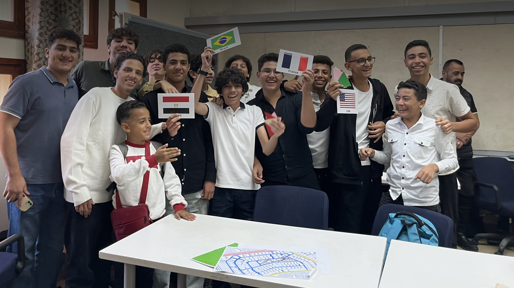
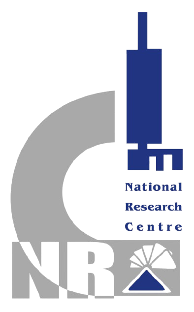
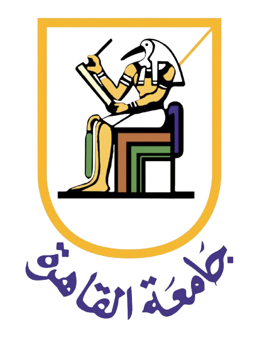
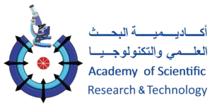
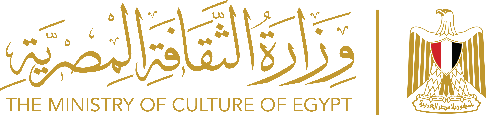
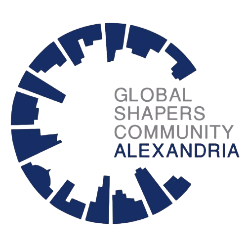

Where Does Our Food Go to Waste?
A closer look at where food gets lost between farms, markets, and kitchens across Egypt, and what that means for the people and resources involved.
Read Article →
We connect scientific research with real communities to reduce food waste across Egypt, one measured program at a time.
Balanced Egypt is a youth led Egyptian NGO working to reduce food waste through research, education, and community action. We bring together young researchers, educators, and organizers who believe the solutions to Egypt's food waste problem already exist, they just need the right people building them.
Every program we run is grounded in real data. We measure what people actually learn, track what changes as a result, and use those results to build programs that work, then bring them to more communities across Egypt.
Active Researchers and Leaders
People Reached Through Our Programs
Specialized Teams
Food waste and food insecurity often exist side by side in the same community. We focus on understanding why, and on closing that gap.
Read More →Every ton of wasted food also wastes the water, energy, and labor that went into growing, processing, and transporting it in the first place.
Read More →Food waste that ends up in landfills breaks down and releases greenhouse gases, contributing an estimated 8 to 10% of global emissions. Cutting it is one of the most direct ways to fight climate change locally.
Read More →We do not believe in one off fixes. Real, lasting change means combining education, evidence, community action, and youth leadership into a single connected approach.
Breaking down common myths about food waste through workshops, campaigns, and hands on learning for people of every age.
Collecting real data from the field and turning it into insight that researchers, partners, and policymakers can actually use.
Connecting surplus food and resources to the people and organizations who can put them to good use.
Giving young people real responsibility and real experience running programs that matter, not just a seat at the table.

Selected as a Community Partner among 2,500+ NGOs, leading interactive workshops linking food waste to child-friendly city design.

A multi-generational event built around three parallel tracks for children, teenagers, and adults to tackle household-level responsibility.

Brought informational talks and interactive booths to students and faculty to share practical ways to cut waste on campus.

A multi-day program combining storytelling, AI-generated videos, and games showing how food waste shapes our cities.

Three days of youth research training for 76 students aged 13-17 in partnership with Greenish and funded by the EU.

One curriculum, delivered by local partners and adapted to each classroom. Our first live pilot reached 65+ pupils.
A closer look at where food gets lost between farms, markets, and kitchens across Egypt, and what that means for the people and resources involved.
Read Article →
How ancient Egyptians stored, tracked, and preserved grain, and what those old systems can still teach us about avoiding waste today.
Read Article →
Why food waste spikes during Ramadan, and the practical ways households and communities can prepare for it without excess.
Read Article →




Join a team of young researchers, educators, and organizers building practical solutions to Egypt's food waste problem.